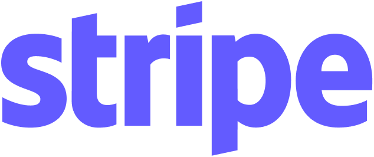
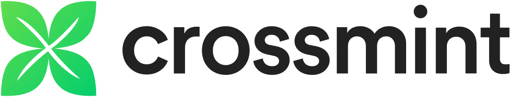

Say Hello To Frida, Your Favorite Personal Agent
Its interface flows like water, taking shape around your intent rather than asking you to conform to its own.
Trusted by the best in agentic commerce


- Ophelia
Say Hello To Frida, Your Favorite Personal Agent
Its interface flows like water, taking shape around your intent rather than asking you to conform to its own.
Trusted by the best in agentic commerce

